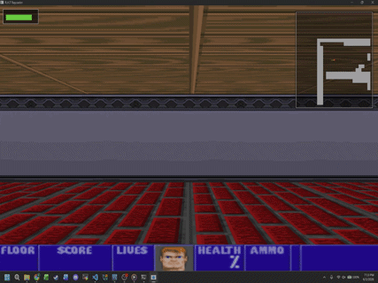

A pseudo-3D game engine for a first-person shooter-style video game. Built from the ground up utilizing a DDA-enhanced raycaster for high-performance graphics rendering.
Software designed to expedite the migration of user data during full network cutovers. Engineered to securely and quickly copy critical user profile data onto targeted drives for rapid deployment.
A custom B-Tree data structure implementation utilized to store, monitor, and analyze network traffic logs. Built to detect unusual operations, patterns, and potential activity anomalies on a network.